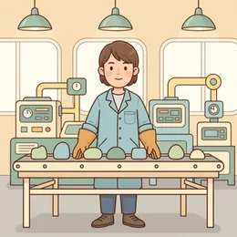
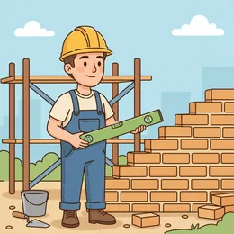
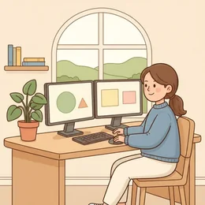

deutschoderwas · Sprechclub · Woche 3 · Strang C · Teil 1 ·
Vier-Tage-Woche — für alle?
Vier Tage arbeiten, fünf Tage bezahlt bekommen — das klingt für die einen nach Zukunft und für die anderen nach Rechenfehler. Heute sammeln wir die Wörter, die Zahlen und die Argumente.
Dein Niveau
Gleiches Thema, andere Sätze. Wechsle jederzeit — probier ruhig beide Seiten aus.
Ein Tag weniger, gleiches Geld
In mehreren Ländern wurde es ausprobiert: vier Arbeitstage statt fünf, bei vollem Lohn. Die Ergebnisse waren gut — aber fast nur in Büros. In Pflege, Produktion und Handwerk sieht die Rechnung anders aus.
Würdest du lieber vier Tage arbeiten? Was wäre der Haken?
Wie viele Stunden arbeitest du in der Woche?
Was würdest du mit dem freien Tag machen?
Funktioniert das in jedem Beruf gleich gut — oder nur in manchen?
Wäre weniger Zeit oder mehr Geld für dich wichtiger?
Wer trägt am Ende die Kosten, wenn alle einen Tag weniger arbeiten?
📊 Drei Zahlen für heute: Eine normale Vollzeitstelle in Deutschland liegt bei 38 bis 40 Stunden. Bei der Vier-Tage-Woche sind es je nach Modell 32 bis 36. Und in Umfragen sagen regelmäßig über 70 Prozent, sie fänden das gut — solange der Lohn gleich bleibt.
Drei Modelle, die alle so heißen
Wenn zwei über die Vier-Tage-Woche streiten, meinen sie oft nicht dasselbe. Weniger Stunden bei gleichem Lohn ist etwas anderes als gleiche Stunden auf vier Tage verteilt — und wieder etwas anderes als weniger Stunden, weniger Lohn.
Welches der drei Modelle wäre für dich das beste?
Kennst du jemanden, der schon so arbeitet?
Warum reden Menschen aneinander vorbei, wenn sie das Modell nicht nennen?
Welches Modell wäre für deinen Beruf realistisch?
💡 Für die Debatte am Mittwoch: Sag immer dazu, welches Modell du meinst. Ein Argument gegen das eine ist oft gar kein Argument gegen das andere — und genau daran scheitern die meisten Diskussionen.
Zwölf Wörter für die Arbeitswoche
Sagt jedes Wort laut — und gleich den Beispielsatz hinterher. Diese Wörter braucht ihr am Mittwoch in der Debatte.
die Arbeitszeit
„Meine Arbeitszeit liegt bei 38 Stunden pro Woche.“
💡 Wichtige Nachbarn: die Vollzeit (meist 38–40 Stunden) und die Teilzeit (alles darunter).
das Gehalt
„Das Gehalt bleibt gleich, die Stunden werden weniger.“
💡 Feiner Unterschied: das Gehalt zahlt man Angestellten monatlich, der Lohn eher nach Stunden im Handwerk und in der Produktion.

die Produktivität
„In den Versuchen blieb die Produktivität gleich oder stieg sogar.“
💡 Das Kernwort der ganzen Debatte. Und die Frage dahinter: Schafft man in vier Tagen wirklich dasselbe wie in fünf?
⏱️
die Überstunde
„Am Ende macht man die Stunden als Überstunden doch wieder.“
💡 Meist im Plural: Überstunden machen, abbauen, bezahlt bekommen. Das häufigste Gegenargument in dieser Debatte.
die Schicht
„In der Pflege wird in drei Schichten gearbeitet.“
💡 Frühschicht, Spätschicht, Nachtschicht. Wo in Schichten gearbeitet wird, muss jede Stunde besetzt sein — deshalb ist die Rechnung dort schwieriger.

der Fachkräftemangel
„Wegen des Fachkräftemangels fehlt in vielen Betrieben das Personal.“
💡 Ein Wort, das in Deutschland fast täglich in den Nachrichten vorkommt. Und beide Seiten benutzen es — für entgegengesetzte Schlüsse.

flexibel
„Ich arbeite flexibel — Hauptsache, die Stunden stimmen am Monatsende.“
💡 Das Nomen: die Flexibilität. Und der Klassiker im Stellenangebot: flexible Arbeitszeiten.
🪫
die Belastung
„Die Belastung ist in vier Tagen höher als in fünf.“
💡 körperliche und psychische Belastung. Und das Verb: belasten — Das belastet mich sehr.
die Erholung
„Ein dritter freier Tag bringt mehr Erholung als zwei.“
💡 Das Verb ist reflexiv: sich erholen — Ich habe mich am Wochenende gut erholt.
💰
sich lohnen
„Für kleine Betriebe lohnt sich das oft nicht.“
💡 Immer unpersönlich mit es oder mit einer Sache als Subjekt: Das lohnt sich. Nie: „Ich lohne mich.“
die Teilzeit
„Sie arbeitet Teilzeit, dreißig Stunden die Woche.“
💡 Ohne Artikel als Wendung: Teilzeit arbeiten, in Teilzeit gehen. Und das Gegenteil ist Vollzeit.
einführen
„Der Betrieb hat die Vier-Tage-Woche vor einem Jahr eingeführt.“
💡 Trennbar. Das Nomen: die Einführung. Und die Vorstufe: etwas testen oder einen Versuch starten.
💡 Spiel: Einer nennt einen Beruf, der andere sagt in zwei Sekunden, ob eine Vier-Tage-Woche dort leicht oder schwer wäre — und ein Wort von der Liste als Begründung.
Drei Modelle, ein Name
Erst die drei Varianten, über die alle gleichzeitig streiten. Darunter drei Satzpaare, bei denen fast alle danebenliegen.
🎁
Weniger Stunden, gleicher Lohn
32 statt 40 Stunden, das Gehalt bleibt. Das meistdiskutierte Modell.
Vier Tage arbeiten, fünf Tage bezahlt bekommen.
📦
Gleiche Stunden, vier Tage
40 Stunden auf vier Tage verteilt — also zehn Stunden täglich.
Länger arbeiten, dafür einen Tag mehr frei.
✂️
Weniger Stunden, weniger Lohn
Im Grunde Teilzeit — nur mit einem neuen Namen.
80 Prozent arbeiten, 80 Prozent verdienen.
✅ So sagt man es
Ich arbeite weniger als früher.
Warum das stimmtBeim Komparativ steht immer als: weniger als, mehr als, besser als. Ohne Ausnahme.
❌ So nicht
Ich arbeite weniger wie früher.
Das Problemwie gehört zur Gleichheit: genauso viel wie früher. Man hört „weniger wie“ oft, aber es gilt als falsch.
✅ So sagt man es
Für kleine Betriebe lohnt sich das nicht.
Warum das stimmtsich lohnen braucht eine Sache als Subjekt — hier das. Die Person kommt mit für dazu.
❌ So nicht
Kleine Betriebe lohnen sich das nicht.
Das ProblemMenschen und Betriebe lohnen sich nicht — nur Dinge tun das. Merksatz: Etwas lohnt sich für jemanden.
✅ So sagt man es
Die Belastung ist höher als vorher.
Warum das stimmtDer Komparativ von hoch ist höher — mit Umlaut und ohne das c. Danach folgt als.
❌ So nicht
Die Belastung ist hocher als vorher.
Das Problemhoch verliert im Komparativ das c und bekommt einen Umlaut: hoch – höher – am höchsten.
Drei Schritte, und dein Beitrag sitzt:
Nenn das Modell:Ich rede von 32 Stunden bei gleichem Lohn.
Nenn die Zahl:Das sind acht Stunden weniger als jetzt.
Nenn die Folge:Also muss dieselbe Arbeit in weniger Zeit passen.
Nenn den Beruf:Im Büro geht das leichter als in der Pflege.
Und immer den Vergleich mitliefern: mehr als, weniger als, genauso viel wie. Ohne Vergleich ist eine Zahl nur eine Zahl.
⚖️ Kurzübung: Jeder nennt eines der drei Modelle und sagt in einem Satz, für wen es gut wäre und für wen nicht. Zwei Sätze pro Person, mehr nicht.
Die vier Bausteine für Zahlen und Vergleiche
Vergleichen, einordnen, einschränken, folgern. Vier Bausteine, mit denen aus einer Zahl ein Argument wird.
1 · 📊 Vergleichen mehr als …weniger als …genauso viel wie …
So klingt esVier Tage sind acht Stunden weniger als fünf — bei genauso viel Arbeit.
2 · 🔢 Einordnen In den meisten Betrieben …Etwa die Hälfte …Bei uns sind es …
So klingt esIn den meisten Betrieben sind es 38 bis 40 Stunden. Bei uns sind es 39.
3 · 🧷 Einschränken Das gilt vor allem für …In … ist das andersNur wenn …
So klingt esDas gilt vor allem für Büros. In der Pflege ist das ganz anders.
4 · ➡️ Folgern Das heißt, dass …Also braucht man …Am Ende führt das zu …
So klingt esDas heißt, dass entweder mehr Leute arbeiten müssen oder weniger geschafft wird.
1 · 📊 Genau vergleichen um acht Stunden weniger als …doppelt so viel wie …kaum mehr als …
So klingt esDas wären um acht Stunden weniger als heute — bei kaum weniger Aufgaben.
2 · 🔢 Zahlen einordnen Die Versuche zeigen, dass …Im Schnitt liegt das bei …Die Zahl sagt allerdings nichts darüber, ob …
So klingt esDie Versuche zeigen, dass die Produktivität gleich blieb — die Zahl sagt allerdings nichts darüber, wie es den Leuten dabei ging.
3 · 🧷 Präzise einschränken Das gilt nur, solange …In Branchen mit Schichtdienst …Unter der Voraussetzung, dass …
So klingt esDas gilt nur, solange die Arbeit sich verdichten lässt. In Branchen mit Schichtdienst geht das kaum.
4 · ➡️ Sauber folgern Daraus folgt, dass …Das hätte zur Folge, dass …Umgekehrt hieße das …
So klingt esDaraus folgt, dass man entweder mehr Personal braucht oder Aufgaben streichen muss — beides kostet Geld.
Verb die Zahl Vergleich und Folge Höflichkeit
🗣️ Sofort anwenden: Jeder sagt einen Satz mit einer Zahl — und muss sofort einen Vergleich anhängen. Eine Zahl ohne als oder wie zählt nicht.
Vier Gespräche — zwei Runden
Runde 1: Lest den Dialog zu zweit laut. Runde 2: Deckt die Zeilen von B ab und sprecht frei — die Hinweise reichen.
Dialog 1 · „In der Kaffeeküche“
Der Betrieb denkt über die Vier-Tage-Woche nach. Zwei Kolleginnen sind unterschiedlich begeistert.
A
Hast du gehört? Sie überlegen, auf vier Tage zu gehen.
B
Bei gleichem Gehalt oder bei weniger? Das ist der ganze Unterschied.
🗣️ Sofort das Modell klären. Ohne das reden zwei Leute über zwei verschiedene Dinge.tippen = Hilfe zeigen
A
Gleiches Gehalt, aber 34 Stunden statt 39.
B
Also fünf Stunden weniger als jetzt — bei genauso vielen Aufgaben?
🗣️ weniger als und genauso viele wie: zwei Vergleiche in einem Satz.tippen = Hilfe zeigen
A
Sie sagen, man schafft dasselbe, wenn man weniger Meetings macht.
B
Das kann sein. Aber bei uns kommt die Arbeit ja von außen, nicht aus Meetings.
🗣️ Zustimmen und dann einschränken — das wirkt stärker als sofortiger Widerspruch.tippen = Hilfe zeigen
A
Stimmt auch wieder.
B
Ich wäre trotzdem dafür. Nur muss man ehrlich sagen, was wegfällt.
🗣️ Position beziehen und eine Bedingung nennen — genau das brauchst du am Mittwoch.tippen = Hilfe zeigen
Dialog 2 · „In der Pflege“
Eine Pflegerin und ein Bürokollege reden über dasselbe Thema — und merken, dass ihre Berufe kaum vergleichbar sind.
A
In der Pflege wäre das doch super, oder?
B
Theoretisch ja. Nur muss jede Schicht besetzt sein, auch am fünften Tag.
🗣️ Theoretisch ja, nur … — die höflichste Art, eine Idee einzuschränken.tippen = Hilfe zeigen
A
Dann bräuchte man mehr Leute.
B
Genau. Und die gibt es nicht — wir haben schon jetzt Fachkräftemangel.
🗣️ Ein Wort, das das ganze Argument trägt. Sag es ruhig direkt.tippen = Hilfe zeigen
A
Also wäre es bei euch unmöglich?
B
Nicht unmöglich, aber teurer als im Büro. Jemand müsste es bezahlen.
🗣️ teurer als — Komparativ mit als. Und die Folge gleich hinterher.tippen = Hilfe zeigen
A
Das hatte ich so noch nicht gesehen.
B
Deshalb ärgert es mich, wenn über Arbeitszeit nur in Büros geredet wird.
🗣️ Persönlich werden ist erlaubt, solange es um die Sache geht.tippen = Hilfe zeigen
Dialog 3 · „Der Chef fragt nach“
Der Chef will wissen, was das Team davon hält. Du bist dafür — aber du sollst sagen, was dafür wegfallen müsste.
A
Wie stehen Sie eigentlich zu einer Vier-Tage-Woche?
B
Grundsätzlich positiv — vorausgesetzt, wir streichen die Hälfte der Meetings.
🗣️ vorausgesetzt, … macht aus Zustimmung eine Bedingung. Sehr nützlich im Beruf.tippen = Hilfe zeigen
A
Warum ausgerechnet die Meetings?
B
Weil sie am meisten Zeit kosten und am wenigsten Ergebnis bringen.
🗣️ am meisten und am wenigsten — Superlative. Genau die üben wir heute.tippen = Hilfe zeigen
A
Und wenn die Arbeit trotzdem nicht reicht?
B
Dann würde ich lieber Aufgaben streichen als Überstunden machen.
🗣️ lieber … als … — der eleganteste Vergleich in einer Diskussion.tippen = Hilfe zeigen
A
Das klingt vernünftig. Schreiben Sie mir das mal kurz auf?
B
Mache ich. Drei Punkte, bis Freitag.
🗣️ Zusagen mit Zahl und Datum — dann ist es verbindlich.tippen = Hilfe zeigen
Dialog 4 · „Im kleinen Betrieb“
Ein Ladeninhaber und eine Angestellte rechnen gemeinsam durch, ob es ginge — und für wen es sich lohnen würde.
A
Für uns lohnt sich das nie. Wir sind zu dritt.
B
Bei drei Leuten wäre es tatsächlich schwieriger als in einem großen Betrieb.
🗣️ schwieriger als. Und tatsächlich zeigt, dass du zuhörst statt zu widersprechen.tippen = Hilfe zeigen
A
Der Laden muss ja sechs Tage offen sein.
B
Ja. Aber müsste jeder von uns dieselben Tage frei haben?
🗣️ Die Frage, die die Sache öffnet — statt sie zu beenden.tippen = Hilfe zeigen
A
Hm. Wenn wir uns abwechseln würden …
B
Dann hätte jeder einen freien Tag, und der Laden bliebe offen.
🗣️ Dann hätte … — die irreale Folge. Am Mittwoch wird das wichtig.tippen = Hilfe zeigen
A
Das müsste man mal durchrechnen.
B
Ich schreibe es auf. Vielleicht lohnt es sich doch.
🗣️ sich lohnen mit es als Subjekt — nie mit einer Person.tippen = Hilfe zeigen
🎭 Und jetzt ihr: Spielt Dialog 2 noch einmal — aber tauscht die Berufe. Wer im Büro arbeitet, argumentiert aus der Pflege, und umgekehrt. Am Mittwoch bekommt ihr die Seite ohnehin zugeteilt.
🧩 Vergleichen: als, wie und der Superlativ
Zahlen überzeugen erst, wenn du sie in Beziehung setzt. Dafür brauchst du drei Stufen — und die eine Regel, an der fast alle scheitern.
Der Komparativ endet auf -er und steht immer mit als: länger als, weniger als, besser als. Bei Gleichheit nimmst du (genau)so … wie: genauso viel wie. Und der Superlativ heißt am …sten: am längsten, am wenigsten, am besten. Kurze Wörter bekommen dabei oft einen Umlaut: lang – länger, hoch – höher, groß – größer.
⚖️gleich → so … wieVier Tage sind genauso anstrengend wie fünf.
▾
📈ungleich → -er + alsDie Belastung ist höher als vorher.
▾
🏆Spitze → am …stenAm meisten Zeit kosten die Meetings.
▾
🔀unregelmäßiggut – besser – am besten · viel – mehr – am meisten
WasDie Belastung
Verbist
Komparativhöher
Vergleichals vorher.
Die Formen, die in dieser Debatte vorkommen
Lies jede Zeile laut. Die vier unregelmäßigen musst du auswendig können — sie kommen am häufigsten vor.
📈
-er + als
für den Unterschied
Vier Tage sind kürzer als fünf.
⚖️
so … wie
für die Gleichheit
genauso produktiv wie vorher
🏆
am …sten
für die Spitze
Am teuersten wird es in der Pflege.
viel – mehr – am meistenwenig – weniger – am wenigstengut – besser – am bestengern – lieber – am liebstenhoch – höher – am höchstenteuer – teurer – am teuersten
Die Falle: als oder wie?
Man hört sehr oft „größer wie“ — im gesprochenen Deutsch überall, in Prüfungen nie. Die Regel ist eindeutig und dauert zwei Sekunden.
🟰
wie
wenn zwei Dinge gleich sind
genauso viel wie · so gut wie
↔️
als
wenn ein Unterschied besteht
mehr als · weniger als · lieber als
🎯
Test
Steht ein -er davor? Dann als.
höher als · weniger als
✅ mehr als · weniger als · besser als✅ genauso viel wie · so gut wie❌ mehr wie · besser wie✅ doppelt so lang wie✅ nicht so anstrengend wie✅ Ich arbeite lieber vier Tage als fünf.
🧱 Bau die Sätze selbst
Tippe die Teile in der richtigen Reihenfolge an. Danach auf „Prüfen“ — und den fertigen Satz laut lesen.
📖 Und jetzt im Zusammenhang
Ein Betrieb rechnet die Vier-Tage-Woche durch. Wähle in jeder Lücke das passende Wort.
Schau auf das Wort davor:
Endet es auf -er (größer, mehr, weniger, besser, lieber)? → als.
Steht davor so, genauso oder doppelt so? → wie.
Merksatz: Gleich mit wie, ungleich mit als.
Und beim Superlativ steht kein Vergleichswort: am meisten — fertig.
Die vier unregelmäßigen Formen lernst du am besten als Kette: viel–mehr–am meisten, gut–besser–am besten, gern–lieber–am liebsten, hoch–höher–am höchsten.
🎭 Drei Gespräche über Arbeitszeit
Zu zweit. Jeder Beitrag muss mindestens einen Vergleich enthalten — mit als, wie oder einem Superlativ. Danach tauschen.
1 · Der Vorschlag im Team
A schlägt die Vier-Tage-Woche vor. B findet die Idee gut, will aber wissen, welche Arbeit dafür wegfällt — und lässt nicht locker.
Ich fände vier Tage besserWir schaffen dasselbe in weniger ZeitDie Meetings kosten am meisten ZeitWir könnten es testen
Grundsätzlich positiv, vorausgesetzt …Was genau würde wegfallen?Das gilt nur, solange …Lieber Aufgaben streichen als Überstunden
✅ Eine gute Runde enthältA nennt das Modell mit Zahlen, benutzt mindestens zwei Vergleiche und sagt konkret, was gestrichen würde.
2 · Büro gegen Schichtdienst
A arbeitet im Büro, B in der Pflege. Beide sind grundsätzlich dafür — aber die Rechnung geht in den zwei Berufen völlig verschieden auf.
Bei uns würde das gehenIn der Pflege ist das andersDann bräuchte man mehr LeuteWer bezahlt das?
Jede Schicht muss besetzt seinDas wäre teurer als im BüroDer Fachkräftemangel kommt dazuFür wen lohnt es sich am Ende?
✅ Eine gute Runde enthältBeide erkennen an, dass ihr eigenes Argument nur für ihre Branche gilt — und sagen das ausdrücklich.
3 · Der kleine Betrieb
A führt einen Laden mit drei Angestellten und sagt zuerst kategorisch Nein. B rechnet vor, wie es doch gehen könnte — mit versetzten freien Tagen.
Für uns lohnt sich das nichtDer Laden muss offen seinWenn wir uns abwechseln?Das müsste man durchrechnen
Bei drei Leuten ist es schwieriger als …Müsste jeder dieselben Tage frei haben?Dann bliebe der Laden trotzdem offenUnter der Voraussetzung, dass …
✅ Eine gute Runde enthältA bleibt nicht beim ersten Nein, sondern lässt sich auf die Rechnung ein — und beide benutzen mindestens einen Superlativ.
🎴 Sprechkarten
Zieh eine Karte und sprich mindestens vier Sätze am Stück.
Deine Aufgabe
Tippe auf den Knopf.
⏱️ Die 90-Sekunden-Challenge
Ein Wort, anderthalb Minuten, freies Sprechen. Es muss nicht perfekt sein — es muss nur weitergehen.
Dein Wort
die Arbeitszeit
1:30
Bau es als Rechnung auf, dann trägt sich die Zeit von selbst:
Wie ist es jetzt? Im Moment arbeite ich …
Was wäre anders? Bei vier Tagen wären es … weniger.
Für wen wäre es gut? Vor allem für …
Wo wird es schwierig? In … ist das schwieriger als …
Und wenn dir eine Zahl fehlt: schätz sie und sag es dazu. „Ungefähr vierzig, denke ich“ ist ein vollwertiger Beitrag.
⏱️ Spielregel: In jeder Runde muss einmal ein Komparativ mit als und einmal ein Superlativ vorkommen. Der Partner hebt die Hand, sobald beides da war.
✅ Sitzt es schon?
8 Fragen. Tippe auf deine Antwort — die Erklärung kommt sofort.
✍️ Lückentext
Wähle in jeder Lücke das passende Wort.
📣 Danach laut: Sagt reihum je einen Satz über euren eigenen Beruf — immer mit einem Vergleich. Wer zweimal dieselbe Vergleichsform nimmt, ist raus.
📮 Deine Hausaufgabe bis Mittwoch
Vier kleine Aufgaben, zusammen etwa 25 Minuten. Am Mittwoch ist die Debatte — Aufgabe 1 ist deine Vorbereitung dafür.
💡 Warum das hilft: Am Mittwoch bekommst du eine Seite zugeteilt, vielleicht die, die du nicht magst. Wer heute beide Seiten aufschreibt, ist auf jeden Fall vorbereitet.
0 von 0 Aufgaben geschafft.
So sehen die Vergleiche aus:
als: Vier Tage sind kürzer als fünf.
als: Die Belastung ist höher als vorher.
als: Ich arbeite lieber vier Tage als fünf.
wie: Wir schaffen genauso viel wie vorher.
wie: Das ist nicht so einfach wie es klingt.
Ein einziger Test: Steht ein -er davor? Dann als. Steht ein so davor? Dann wie.
So könnten die Argumente der Gegenseite aussehen:
In der Pflege: Jede Schicht muss besetzt sein — weniger Stunden heißt hier zwingend mehr Personal.
Im Handwerk: Ein Auftrag dauert so lange, wie er dauert. Verdichten lässt sich das kaum.
Im kleinen Betrieb: Bei drei Angestellten fehlt jeder freie Tag sofort spürbar.
Bei den Kosten: Gleiches Gehalt für weniger Stunden bedeutet höhere Lohnkosten pro Stunde.
Beim Personal: Wegen des Fachkräftemangels gibt es die zusätzlichen Leute schlicht nicht.
Für Mittwoch gilt: Ein Argument ohne Branche und ohne Zahl überzeugt niemanden. Beides gehört dazu.
📬 Abgabe: Bring deine Argumente am Mittwoch mit — auf Papier oder im Kopf. Sprachnachrichten wie immer bis Sonntag in die WhatsApp-Gruppe.
🔜 Am Mittwoch, Teil 2: die Debatte. Zwei Lager, feste Redemittel, und am Ende stimmt die Gruppe ab. Bring dein stärkstes Argument mit.